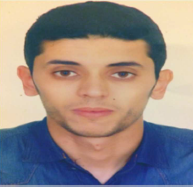

Mohammed BOUZHAR

Summary
An IT Support professional with 5 years’ experience of
performing diagnostics and resolving employees’
technical problems via telephone, email and end-toend
management tool.
A Moroccan young, extremely motivated to work under
rough conditions, enjoys taking challenges as well as
working under pressure, possesses strong customer
service skills, has a good communicative skills and team
motivator
Education
- Master Degree, Network and Computer Systems.
Hassan 1st University
2012
Settat, Morocco
- Bachelor Degree, Network and Computer Systems.
Hassan 1st University
2009
Settat, Morocco
- Skilled Technician, Network and Computer Systems.
Institute of Applied Technologies
2008
El jadida, Morocco
Work experience
- Somadir
August 2018 to date
Location: El Jadida, Morocco
Role : IT Support Engineer
- Intelcia Group
Mai 2017 to July 2018
Location: El Jadida, Morocco
Role : Local IT
- Oberthur Technologies
September 2013 to September 2016
Location : Rabat, Morocco
Role : IT Support Engineer